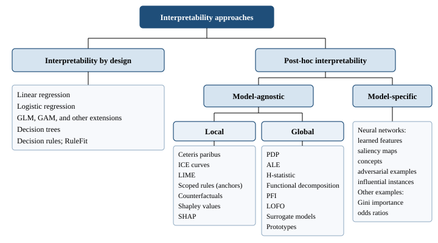
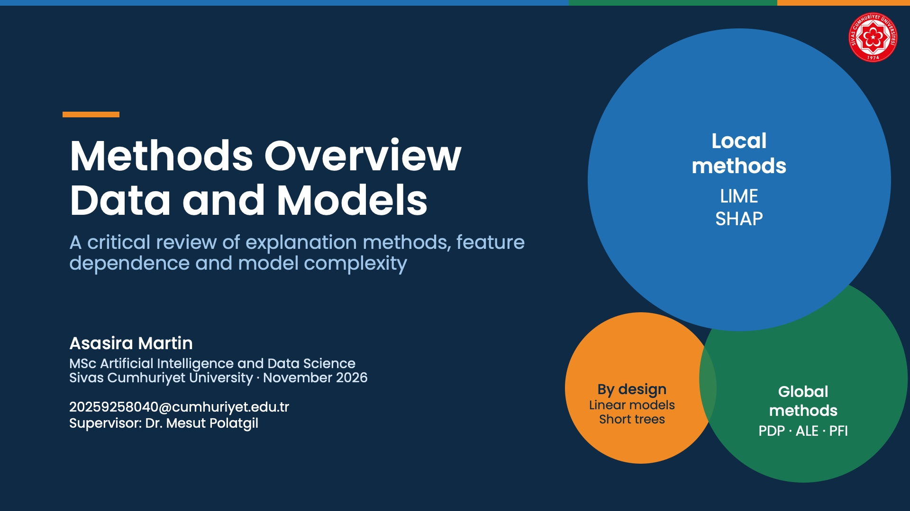

Explainable Artificial Intelligence · Sivas Cumhuriyet University · November 2026
Explanation methods, feature dependence, and model complexity, read through Chapters 4 and 5 of C. Molnar's Interpretable Machine Learning.
Asasira Martin · MSc Artificial Intelligence and Data Science

The full 15-page paper exactly as typeset in Word, page by page, with zoom and the original PDF.
Open paper →
The original PowerPoint deck, slide for slide, with speaker notes and fullscreen mode.
Open slides →